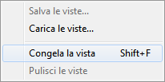

This documentation is not finished. Please help and contribute documentation.
See Draft ShapeString for good documented Command. Gui Command gives an overview over commands. And see List of Commands for other commands.
Go to Help FreeCAD to contribute.
|
| Posizione nel menu |
|---|
| Visualizza → Congela la vista |
| Ambiente |
| Tutti |
| Avvio veloce |
| Nessuno |
| Vedere anche |
| ... |
Descrizione
Permette di salvare una particolare vista del lavoro in corso, di archiviarla e di ripristinarla all'occorrenza.
Non salva una cattura dello schermo (una fotografia del lavoro), ma la posizione degli assi rispetto all'osservatore.
E' possibile salvare una vista lavorando su un documento e applicarla in un altro documento.
Utlizzo
Congela la vista
- Predisporre la vista che si vuole salvare e tenere a disposizione.
- Avviare la funzione dal menu Visualizza → Congela la visualizzazione.
Appare una seconda finestra per la gestione delle Viste : 
{kind=link}
- Selezionare Congela la vista.
- Selezionare una vista standard e notare che essa sostituisce quella precedente.
- Avviare nuovamente la funzione dal menu Visualizza → Congela la visualizzazione e osservare che la finestra per la gestione delle Viste ora contiene anche la voce Ripristina la vista 1. La vista 1 è quella congelata.
- Selezionare Ripristina la vista 1 per visualizzarla.
Salva le viste...
Per archiviare la vista e renderla riutilizzabile anche in altri lavori:
- Selezionare Salva le viste.... Appare la finestra per specificare un nome e la posizione.
- Indicare un nome e una posizione per archiviare la vista e confermare.
Carica le viste
Le viste salvate possono essere caricate e utilizzate anche in nuovi documenti, agiscono come dei pulsanti aggiuntivi a quelli delle viste standard.
Quando si avvia questa operazione appare un avviso. Continuando nell'azione le viste al momento congelate, ma non salvate, andranno perse. Per non perdere eventuali viste congelate salvarle prima di importare quelle già archiviate.
Pulisci le viste
Azzera l'elenco delle viste congelate o importate.
Altri comandi utili per gestire le viste e le finestre
- Crea una nuova vista per lavorare su più viste contemporaneamente.
- Salva immagine per salvare una schermata.
- Finestra del documento per avere finestre mobili.
- Menu Finestre per gestire le finestre attive.
Altri comandi: Comandi per categorie